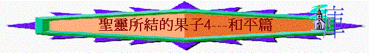

一.和平的字義
「聖靈所結的果子，就是仁愛、喜樂、和平、忍耐、恩慈、良善、信實、」加5:22
～在新約和合本中主要有四種譯法
1.
和平
「因為神的國不在乎吃喝，只在乎公義、和平，並聖靈中的喜樂。」羅14:17
「你要逃避少年的私慾，同那清心禱告主的人追求公義、信德、仁愛、和平。」提後2:22
2.
平安
「在至高之處榮耀歸與神！在地上平安歸與他所喜悅的人（有古卷：喜悅歸與人）！」路2:14
「體貼肉體的，就是死；體貼聖靈的，乃是生命、平安。」羅8:6
3.
和睦
「也要離惡行善；尋求和睦，一心追趕。」彼前3:11
「所以，我們務要追求和睦的事與彼此建立德行的事。」羅14:19
4.
安然
「主啊！如今可以照你的話，釋放僕人安然去世；」路2:29
「親愛的弟兄啊，你們既盼望這些事，就當殷勤，使自己沒有玷污，無可指摘，安然見主；」彼後3:14
二.和平的內容
1.內心經歷的平安
～人面對生活不同的情況下，心靈仍感受有平安
A.平安的重要
a.消除懼怕
「我留下平安給你們；我將我的平安賜給你們。我所賜的，不像世人所賜的。你們心裡不要憂愁，也不要膽怯。」約14:27
「那日（就是七日的第一日）晚上，門徒所在的地方，因怕猶太人，門都關了。耶穌來，站在當中，對他們說：「願你們平安！」」約20:19
b.令人放心
「我將這些事告訴你們，是要叫你們在我裡面有平安。在世上，你們有苦難；但你們可以放心，我已經勝了世界。」」約16:33
c.捍衛心懷
「神所賜、出人意外的平安必在基督耶穌裡保守你們的心懷意念。」腓4:7
B.平安的特質
a.是從天父而來
「我寫信給你們在羅馬、為神所愛、奉召作聖徒的眾人。願恩惠、平安從我們的父神並主耶穌基督歸與你們！」羅1:7
b.是基督所賜的
「我留下平安給你們、我將我的平安賜給你們．我所賜的、不像世人所賜的．你們心裡不要憂愁、也不要膽怯。」約14:27
～非世人所賜的，是基督賜的
c.與聖靈有關的
「我還與你們同住的時候，已將這些話對你們說了。但保惠師，就是父因我的名所要差來的聖靈，他要將一切的事指教你們，並且要叫你們想起我對你們所說的一切話。我留下平安給你們；我將我的平安賜給你們。我所賜的，不像世人所賜的。你們心裡不要憂愁，也不要膽怯。」約14:25-27
「聖靈所結的果子，就是仁愛、喜樂、和平、忍耐、恩慈、良善、信實、」加5:22
d.可出人意外的
「神所賜、出人意外的平安必在基督耶穌裡保守你們的心懷意念。」腓4:7
C.得平安方法
a.祝願
「願賜平安的神常和你們眾人同在。阿們！」羅15:33
b.配得
「那家若配得平安，你們所求的平安就必臨到那家；若不配得，你們所求的平安仍歸你們。」太10:13
c.有主
「我將這些事告訴你們，是要叫你們在我裡面有平安。在世上，你們有苦難；但你們可以放心，我已經勝了世界。」約16:33
d.行善
「卻將榮耀、尊貴、平安加給一切行善的人，先是猶太人，後是希利尼人。」羅2:10
e.行道
「凡照此理而行的、願平安憐憫加給他們、和 神的以色列民。」加6:16
f.禱告
「應當一無掛慮，只要凡事藉著禱告、祈求，和感謝，將你們所要的告訴神。神所賜、出人意外的平安必在基督耶穌裡保守你們的心懷意念。」腓4:6-7
2.與人關係的和睦
A.和睦的原因
a.神國特質
「因為神的國不在乎吃喝，只在乎公義、和平，並聖靈中的喜樂。」羅14:17
b.蒙福方法
「使人和睦的人有福了！因為他們必稱為神的兒子。」太5:9
c.真理吩咐
「所以，我們務要追求和睦的事與彼此建立德行的事。」羅14:19
「你們要追求與眾人和睦，並要追求聖潔；非聖潔沒有人能見主。」來12:14
B.和睦的攔阻
「你們心裡若懷著苦毒的嫉妒和分爭，就不可自誇，也不可說謊話抵擋真道。這樣的智慧不是從上頭來的，乃是屬地的，屬情慾的，屬鬼魔的。在何處有嫉妒、分爭，就在何處有擾亂和各樣的壞事。惟獨從上頭來的智慧，先是清潔，後是和平，溫良柔順，滿有憐憫，多結善果，沒有偏見，沒有假冒。並且使人和平的，是用和平所栽種的義果。」雅3:14-18
a.嫉妒
b.分爭
C.和睦的實踐
a.一同追求
「你要逃避少年的私慾，同那清心禱告主的人追求公義、信德、仁愛、和平。」提後2:22
b.和平聯絡
「用和平彼此聯絡，竭力保守聖靈所賜合而為一的心。」弗4:3
c.努力實踐
「若是能行，總要盡力與眾人和睦。」羅12:18
「也要離惡行善；尋求和睦，一心追趕。」彼前3:11
d.重視肢體
「鹽本是好的，若失了味，可用什麼叫他再鹹呢？你們裡頭應當有鹽，彼此和睦。」」可9:50
～可9:33-50的重點是和睦，門徒為一些事而有爭議；另外他們見人奉主的名趕鬼，想禁止他，耶穌卻帶出要和睦的真理----是要重視他們
(1)重視主所重視的人
「於是領過一個小孩子來，叫他站在門徒中間，又抱起他來，對他們說：「凡為我名接待一個像這小孩子的，就是接待我；凡接待我的，不是接待我，乃是接待那差我來的。」可9:36-37
「凡因你們是屬基督，給你們一杯水喝的，我實在告訴你們，他不能不得賞賜。」」可9:41
(2)尊重不敵擋主的人
「約翰對耶穌說：「夫子，我們看見一個人奉你的名趕鬼，我們就禁止他，因為他不跟從我們。」耶穌說：「不要禁止他；因為沒有人奉我名行異能，反倒輕易毀謗我。不敵擋我們的，就是幫助我們的。」可9:38-40
(3)不絆倒任何一個人
「凡使這信我的一個小子跌倒的，倒不如把大磨石拴在這人的頸項上，扔在海裡。倘若你一隻手叫你跌倒，就把他砍下來；你缺了肢體進入永生，強如有兩隻手落到地獄，入那不滅的火裡去。」可9:42-44
3.在神面前的安然
A.因著基督得與父神相和
「我們既因信稱義，就藉著我們的主耶穌基督得與神相和。」羅5:1
B.因受管教可結平安果子
「凡管教的事，當時不覺得快樂，反覺得愁苦；後來卻為那經練過的人結出平安的果子，就是義。」來12:11
C.以基督平安在心中作主
「又要叫基督的平安在你們心裡作主；你們也為此蒙召，歸為一體；且要存感謝的心。」西3:15
D.要殷勤謹守可安然見主
「親愛的弟兄啊，你們既盼望這些事，就當殷勤，使自己沒有玷污，無可指摘，安然見主；」彼後3:14